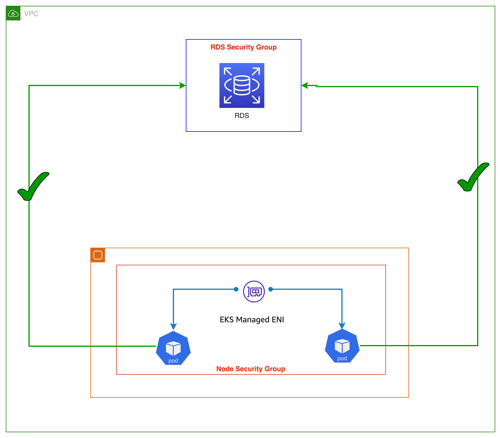

每个 Pod 的安全组¶
AWS 安全组充当 EC2 实例的虚拟防火墙，用于控制入站和出站流量。默认情况下，Amazon VPC CNI 将使用与节点上主 ENI 关联的安全组。更具体地说，与实例关联的每个 ENI 都将具有相同的 EC2 安全组。因此，节点上的每个 Pod 都共享该节点的相同安全组。
如下图所示，运行在工作节点上的所有应用程序 Pod 都将能够访问 RDS 数据库服务(考虑到 RDS 入站允许节点安全组)。安全组过于粗粒度，因为它们适用于在节点上运行的所有 Pod。Pod 的安全组为工作负载提供了网络隔离，这是良好的深度防御策略的重要组成部分。

使用 Pod 的安全组，您可以通过在共享计算资源上运行具有不同网络安全要求的应用程序来提高计算效率。可以在 EC2 安全组中定义多种类型的安全规则(如 Pod 到 Pod 和 Pod 到外部 AWS 服务)，并使用 Kubernetes 原生 API 将其应用于工作负载。下图显示了在 Pod 级别应用的安全组，以及它们如何简化您的应用程序部署和节点架构。Pod 现在可以访问 Amazon RDS 数据库。

您可以通过为 VPC CNI 设置 ENABLE_POD_ENI=true 来启用 Pod 的安全组。启用后，运行在控制平面(由 EKS 管理)上的 "VPC 资源控制器"会创建并将一个名为 "aws-k8s-trunk-eni" 的主干接口附加到节点。主干接口充当附加到实例的标准网络接口。要管理主干接口，您必须将 AmazonEKSVPCResourceController 托管策略添加到与您的 Amazon EKS 集群相关的集群角色。
控制器还会创建名为 "aws-k8s-branch-eni" 的分支接口，并将它们与主干接口关联。Pod 使用 SecurityGroupPolicy 自定义资源分配安全组，并与分支接口关联。由于安全组是与网络接口指定的，因此我们现在能够在这些额外的网络接口上调度需要特定安全组的 Pod。请查看 EKS 用户指南关于 Pod 的安全组部分,包括部署先决条件。

分支接口容量是现有实例类型限制的附加,用于辅助 IP 地址。使用安全组的 Pod 不计入 max-pods 公式中，当您为 Pod 使用安全组时，您需要考虑提高 max-pods 值或满足于运行比节点实际支持的 Pod 更少。
m5.large 最多可以有 9 个分支网络接口，并且最多可以为其标准网络接口分配 27 个辅助 IP 地址。如下例所示，m5.large 的默认 max-pods 为 29，EKS 将使用安全组的 Pod 计入最大 Pod 数。请参阅 EKS 用户指南了解如何更改节点的 max-pods 的说明。
当 Pod 的安全组与 自定义网络结合使用时，将使用 Pod 的安全组中定义的安全组，而不是 ENIConfig 中指定的安全组。因此，启用自定义网络时，在使用每个 Pod 的安全组时，请仔细评估安全组排序。
建议¶
禁用 TCP 早期解复用以进行活跃度探测¶
如果您使用活跃度或就绪探测，您还需要禁用 TCP 早期解复用，以便 kubelet 可以通过 TCP 连接到分支网络接口上的 Pod。这仅在严格模式下需要。要执行此操作，请运行以下命令：
在 initContainer 部分下，将 DISABLE_TCP_EARLY_DEMUX 的值更改为 true。
使用 Pod 的安全组来利用现有的 AWS 配置投资¶
安全组使限制对 VPC 资源(如 RDS 数据库或 EC2 实例)的网络访问变得更加容易。Pod 的安全组的一个明显优势是可以重用现有的 AWS 安全组资源。 如果您使用安全组作为网络防火墙来限制对 AWS 服务的访问，我们建议使用分支 ENI 将安全组应用于 Pod。如果您要将应用程序从 EC2 实例转移到 EKS，并使用安全组限制对其他 AWS 服务的访问，请考虑使用 Pod 的安全组。
配置 Pod 安全组强制模式¶
Amazon VPC CNI 插件版本 1.11 添加了一个名为 POD_SECURITY_GROUP_ENFORCING_MODE("强制模式")的新设置。强制模式控制应用于 Pod 的安全组以及是否启用源 NAT。您可以将强制模式指定为严格或标准。严格是默认值，反映了在设置 ENABLE_POD_ENI 为 true 时 VPC CNI 的以前行为。
在严格模式下，仅强制执行分支 ENI 安全组。源 NAT 也被禁用。
在标准模式下，将应用与主 ENI 和与 Pod 关联的分支 ENI 相关联的安全组。网络流量必须符合这两个安全组。
警告
任何模式更改只会影响新启动的 Pod。现有 Pod 将使用创建 Pod 时配置的模式。如果客户想要更改流量行为，他们需要重新启动具有安全组的现有 Pod。
强制模式：使用严格模式隔离 Pod 和节点流量：¶
默认情况下，Pod 的安全组设置为"严格模式"。如果您必须完全分离 Pod 流量和节点的其余流量，请使用此设置。在严格模式下，源 NAT 被关闭，因此可以使用分支 ENI 出站安全组。
警告
启用严格模式时，Pod 的所有出站流量都将离开节点并进入 VPC 网络。同一节点上的 Pod 之间的流量将通过 VPC。这会增加 VPC 流量，并限制基于节点的功能。NodeLocal DNSCache 不支持严格模式。
强制模式：在以下情况下使用标准模式¶
客户端源 IP 对 Pod 中的容器可见
如果您需要保持客户端源 IP 对 Pod 中的容器可见，请考虑将 POD_SECURITY_GROUP_ENFORCING_MODE 设置为 standard。Kubernetes 服务支持 externalTrafficPolicy=local 以保留客户端源 IP(默认类型为 cluster)。您现在可以在标准模式下使用 externalTrafficPolicy 设置为 Local 的 NodePort 和 LoadBalancer 类型的 Kubernetes 服务运行实例目标。Local 保留客户端源 IP，并避免了 LoadBalancer 和 NodePort 类型服务的第二跳。
部署 NodeLocal DNSCache
使用 Pod 的安全组时，请将模式配置为标准以支持使用 NodeLocal DNSCache的 Pod。NodeLocal DNSCache 通过在集群节点上作为 DaemonSet 运行 DNS 缓存代理来提高集群 DNS 性能。这将有助于具有最高 DNS QPS 要求的 Pod 查询本地 kube-dns/CoreDNS,从而提高延迟。
NodeLocal DNSCache 不支持严格模式，因为所有网络流量(即使是到节点的流量)也会进入 VPC。
支持 Kubernetes 网络策略
在使用与 Pod 关联的安全组时，我们建议使用标准强制模式。
我们强烈建议利用 Pod 的安全组来限制对不属于集群的 AWS 服务的网络级访问。考虑使用网络策略来限制集群内部 Pod 之间的网络流量，通常称为东西向流量。
识别与 Pod 的安全组不兼容的情况¶
基于 Windows 和非 nitro 实例不支持 Pod 的安全组。要利用 Pod 的安全组，实例必须标记为 isTrunkingEnabled。如果您的 Pod 不依赖于 VPC 内部或外部的任何 AWS 服务，请使用网络策略而不是安全组来管理 Pod 之间的访问。
使用 Pod 的安全组有效控制对 AWS 服务的流量¶
如果在 EKS 集群内运行的应用程序需要与 VPC 内的另一个资源(例如 RDS 数据库)通信，则请考虑使用 Pod 的安全组。虽然有一些策略引擎允许您指定 CIDR 或 DNS 名称，但当与具有位于 VPC 内的端点的 AWS 服务通信时，它们并不是最佳选择。
相反，Kubernetes 网络策略提供了一种控制集群内部和外部的入站和出站流量的机制。如果您的应用程序对其他 AWS 服务的依赖有限，应考虑 Kubernetes 网络策略。您可以配置基于 CIDR 范围的网络策略来限制对 AWS 服务的访问，而不是使用 AWS 原生语义(如安全组)。您可以使用 Kubernetes 网络策略来控制 Pod 之间(通常称为东西向流量)以及 Pod 和外部服务之间的网络流量。Kubernetes 网络策略在 OSI 第 3 层和第 4 层实现。
Amazon EKS 允许您使用网络策略引擎，如 Calico 和 Cilium。默认情况下，不安装网络策略引擎。请查看相应的安装指南以获取设置说明。有关如何使用网络策略的更多信息，请参阅 EKS 安全最佳实践。DNS 主机名功能在网络策略引擎的企业版本中可用，这对于控制 Kubernetes 服务/Pod 与 AWS 之外运行的资源之间的流量可能很有用。此外，对于默认不支持安全组的 AWS 服务，您也可以考虑 DNS 主机名支持。
为使用 AWS 负载均衡器控制器标记单个安全组¶
当为 Pod 分配多个安全组时，Amazon EKS 建议使用 kubernetes.io/cluster/$name 共享或拥有的标签来标记单个安全组。该标签允许 AWS 负载均衡器控制器更新安全组的规则，以将流量路由到 Pod。如果只为 Pod 分配了一个安全组，则标记是可选的。安全组中设置的权限是累加的，因此标记单个安全组就足以让负载均衡器控制器定位和协调规则。它还有助于遵守安全组定义的默认配额。
为出站流量配置 NAT¶
禁用从分配了安全组的 Pod 的出站流量的源 NAT。对于需要访问互联网的使用安全组的 Pod，请在配置了 NAT 网关或实例的私有子网上启动工作节点，并在 CNI 中启用 外部 SNAT。
将具有安全组的 Pod 部署到私有子网¶
分配了安全组的 Pod 必须在部署到私有子网的节点上运行。请注意，部署到公共子网的分配了安全组的 Pod 将无法访问互联网。
验证 Pod 规范文件中的 terminationGracePeriodSeconds¶
确保您的 Pod 规范文件中 terminationGracePeriodSeconds 为非零值(默认为 30 秒)。这对于 Amazon VPC CNI 从工作节点删除 Pod 网络至关重要。当设置为零时，CNI 插件不会从主机删除 Pod 网络，并且分支 ENI 无法有效清理。
在 Fargate 上使用 Pod 的安全组¶
在 Fargate 上运行的 Pod 的安全组与在 EC2 工作节点上运行的 Pod 的安全组工作方式非常相似。例如，您必须先创建安全组，然后在与 Fargate Pod 关联的 SecurityGroupPolicy 中引用它。默认情况下，集群安全组会分配给所有未明确分配 SecurityGroupPolicy 的 Fargate Pod。为简单起见，您可能希望将集群安全组添加到 Fargate Pod 的 SecurityGroupPolicy 中，否则您将不得不向安全组添加最小安全组规则。您可以使用 describe-cluster API 找到集群安全组。
aws eks describe-cluster --name CLUSTER_NAME --query 'cluster.resourcesVpcConfig.clusterSecurityGroupId'
cat >my-fargate-sg-policy.yaml <<EOF
apiVersion: vpcresources.k8s.aws/v1beta1
kind: SecurityGroupPolicy
metadata:
name: my-fargate-sg-policy
namespace: my-fargate-namespace
spec:
podSelector:
matchLabels:
role: my-fargate-role
securityGroups:
groupIds:
- cluster_security_group_id
- my_fargate_pod_security_group_id
EOF
最小安全组规则列在这里。这些规则允许 Fargate Pod 与集群内服务(如 kube-apiserver、kubelet 和 CoreDNS)通信。您还需要添加规则以允许与 Fargate Pod 的入站和出站连接，以及来自您的 VPC 的连接。这将允许您的 Pod 与其他 Pod 或 VPC 中的资源通信。此外，您还需要包含规则，以便 Fargate 可以从 Amazon ECR 或其他容器注册表(如 DockerHub)拉取容器镜像。有关更多信息，请参阅 AWS 一般参考中的 AWS IP 地址范围。
您可以使用以下命令找到应用于 Fargate Pod 的安全组。
请记下上述命令中的 eniId。
aws ec2 describe-network-interfaces --network-interface-ids ENI_ID --query 'NetworkInterfaces[*].Groups[*]'
必须删除并重新创建现有的 Fargate Pod，新的安全组才能应用。例如，以下命令启动了 example-app 的部署。要更新特定 Pod，您可以在下面的命令中更改命名空间和部署名称。